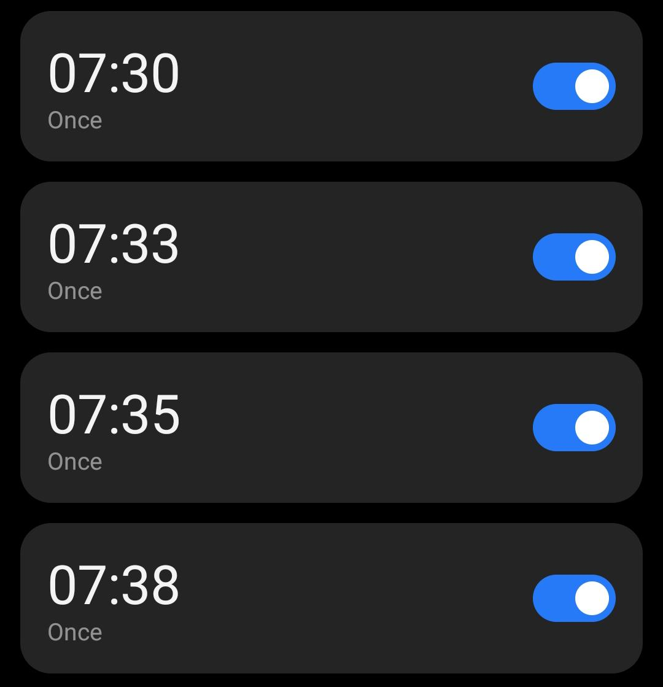
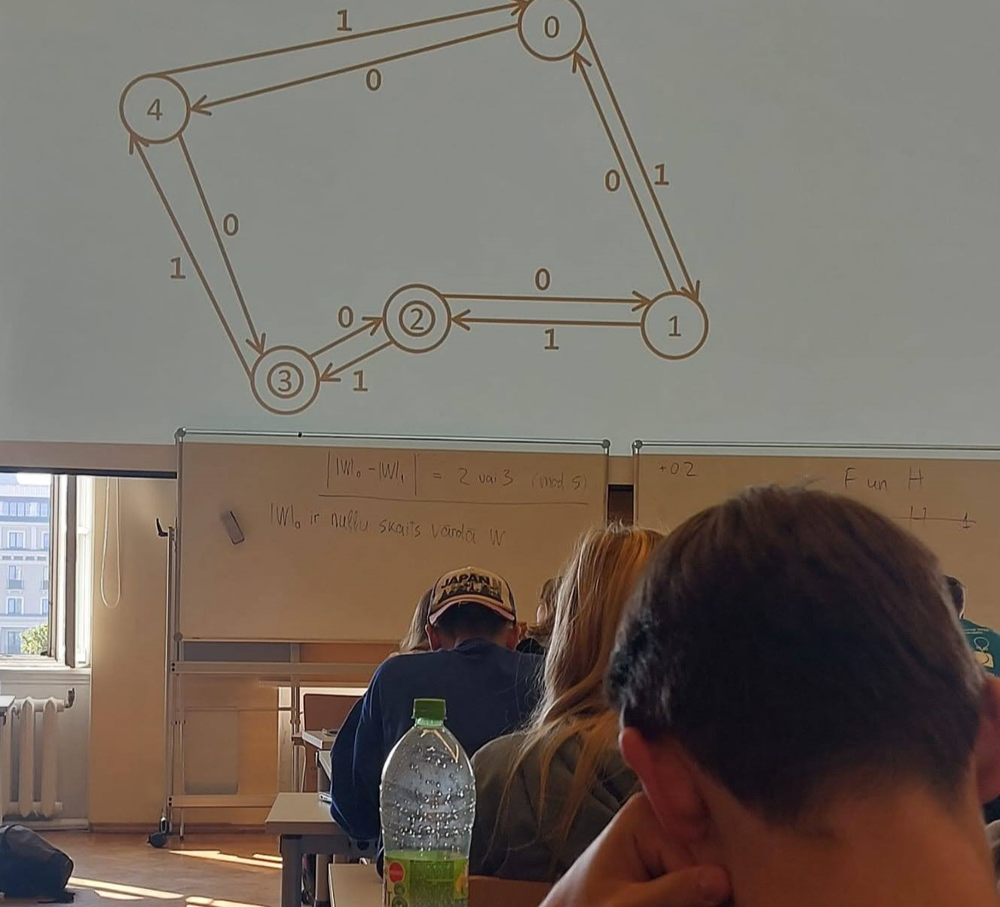
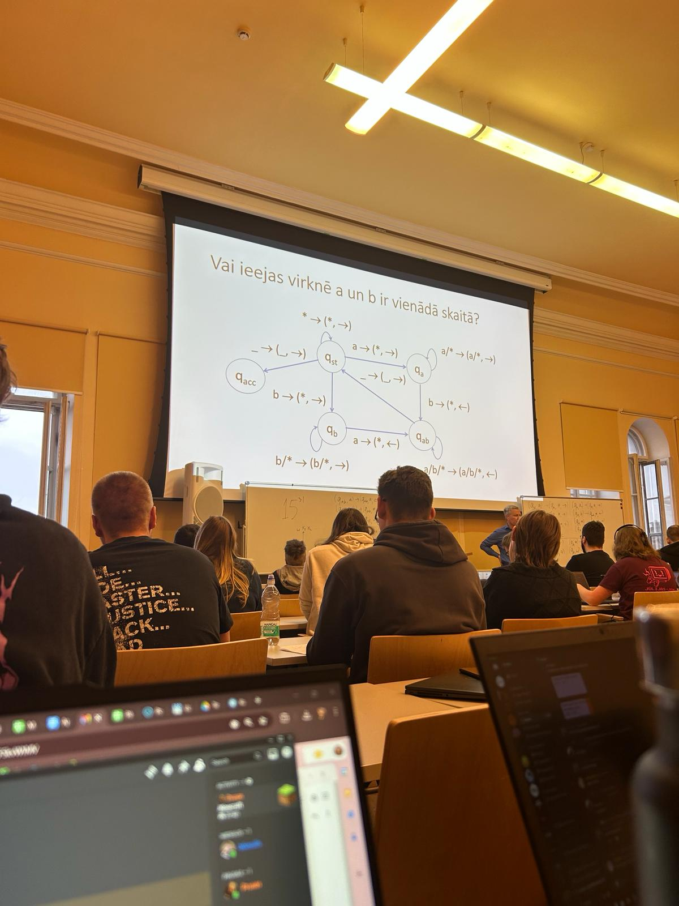
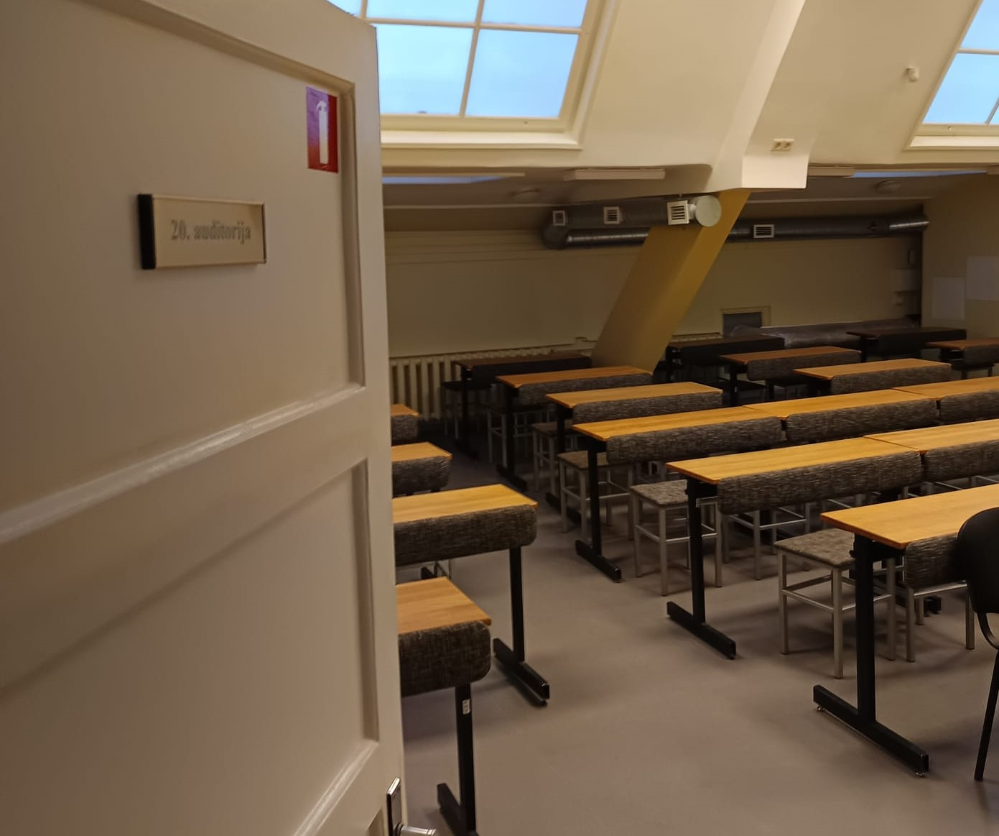
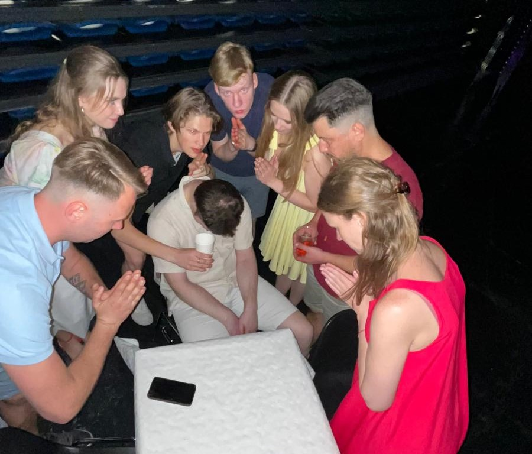

Studenta nedēļa
Datorikas nodaļā
Piecu dienu ceļojums caur lekcijām, projektiem,
termiņiem un mazajām uzvarām.
Uzrāviens
Nedēļa sākas ar jaunu enerģiju
Pirmdienas rīti nekad nav viegli. Modinātājs zvana pārāk agri, un pirmās minūtes paiet mēģinot saprast, cik daudz kafijas būs vajadzīgs, lai pilnībā pamostos. Tomēr pēc brīža sākas ierastais ritms — steiga uz universitāti, pārpildīts transports un domas par to, kas šonedēļ jāpaspēj.
Lekcijās visi vēl izskatās mazliet noguruši pēc brīvdienām, bet pamazām auditorijā atgriežas dzīvība. Kāds pārskata iepriekšējās nedēļas pierakstus, cits cenšas pabeigt uzdevumu pēdējā brīdī. Pasniedzēji uzreiz ķeras pie tēmas, un diezgan ātri kļūst skaidrs, ka šī nedēļa būs intensīva.
Vakarā lielākā daļa laika paiet pie datora. Tiek sākti pirmie laboratorijas darbi un sakārtoti pieraksti nākamajām dienām. Lai arī nogurums jūtams jau pirmdienā, ir arī laba sajūta — nedēļa ir sākusies produktīvi, un tas dod motivāciju turpināt.

Domāšana
Idejas sāk savienoties kopā

Otrdienās parasti ir mierīgāks ritms. Nav sajūtas, ka viss notiek skrienot, tāpēc var vairāk koncentrēties uz pašiem uzdevumiem. No rīta tiekamies ar kursa biedriem bibliotēkā, lai turpinātu darbu pie projekta.
Dažreiz grupas darbs ir sarežģītāks nekā pats programmēšanas uzdevums. Katram ir savas idejas, un ne vienmēr tās sakrīt. Bet tieši diskusijās rodas labākie risinājumi. Mēs vairākas reizes pārtaisām vienu un to pašu shēmu, līdz beidzot visi ir apmierināti.
Dienas beigās rodas sajūta, ka projekts tiešām sāk izskatīties pēc kaut kā nopietna. Tas motivē turpināt, pat ja priekšā vēl daudz darba.
Cīņa
Kļūdas, labojumi un mazas uzvaras
Trešdiena parasti ir visnogurdinošākā diena nedēļā. Laboratorijas darbi prasa daudz uzmanības, un dažreiz viena maza kļūda var aizņemt vairākas stundas.
Ir brīži, kad šķiet — nekas nesanāks. Kods nestrādā, kļūdas parādās viena pēc otras, un interneta forumos atbildes nepalīdz. Bet tieši tajā brīdī sākas īstā mācīšanās. Pamazām izdodas saprast, kur problēma slēpjas.
Kad beidzot viss darbojas, sajūta ir ļoti laba. Nogurums nepazūd, bet parādās gandarījums, ka izdevās nepamest darbu pusceļā.

Pārbaudījums
Prezentācijas un uztraukums

Ceturtdienās bieži notiek prezentācijas vai projektu aizstāvēšana. Lai arī sagatavošanās aizņem vairākas dienas, uztraukums pirms uzstāšanās vienalga nepazūd.
Kad prezentācija beidzās, sajūta bija daudz mierīgāka. Pasniedzējs uzdeva interesantus jautājumus un deva vairākus ieteikumus, ko nākotnē varētu uzlabot.
Elpošana
Nedēļas noslēgums
Piektdiena parasti šķiet mierīgāka nekā pārējās dienas. Lekcijas ir īsākas, un pēc saspringtās nedēļas rodas sajūta, ka var mazliet atslābt.
Pēc nodarbībām bieži sanāk aiziet ar kursa biedriem uz bāru. Sarunas nav tikai par studijām — runājam arī par dzīvi, hobijiem un nākotnes plāniem.
Vakarā pārskatu visu, kas šonedēļ paveikts. Dažas lietas izdevās labāk, citas vēl jāuzlabo, bet kopumā ir sajūta, ka nedēļa bijusi produktīva.
